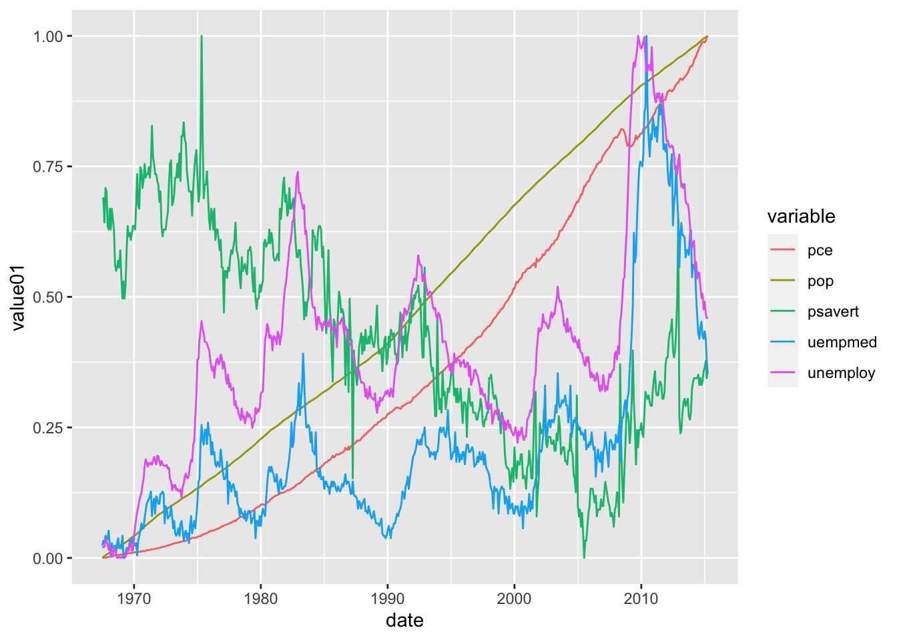

79 Some other geom
Written by Ruijia Yang and last updated on January 30, 2022.
79.1 Introduction

Image Source:https://github.com/allisonhorst/stats-illustrations/blob/master/rstats-artwork/ggplot2_exploratory.png, Allison Horst
{kind=link}
In this lesson, you will learn how to:
- Plot box-plot and line-plot using the
ggplotpackage
Prerequisite skills include:
- Having
ggplotinstalled and loaded - Basic familiarity with
ggplot
Highlights:
- Customize your plots box-plots and line-plots.
79.2 The content
79.2.1 box-plot
A box-plot is a visual representation of the distribution of numerical data. It allows you to easily see where your data is concentrated and the variation of the data based on the minimum, the maximum, the sample median, and the first and third quartiles. Additionally, it can be used to compare the variation between different groups.
Here we have a builted in dataset called chickwts. This dataset contains 71 observations and 2 variable: weight and feed. The variable weight is a numeric variable giving the chick weigh, and variable feed is a factor giving the feed type.
chickwts
#> weight feed
#> 1 179 horsebean
#> 2 160 horsebean
#> 3 136 horsebean
#> 4 227 horsebean
#> 5 217 horsebean
#> 6 168 horsebean
#> 7 108 horsebean
#> 8 124 horsebean
#> 9 143 horsebean
#> 10 140 horsebean
#> 11 309 linseed
#> 12 229 linseed
#> 13 181 linseed
#> 14 141 linseed
#> 15 260 linseed
#> 16 203 linseed
#> 17 148 linseed
#> 18 169 linseed
#> 19 213 linseed
#> 20 257 linseed
#> 21 244 linseed
#> 22 271 linseed
#> 23 243 soybean
#> 24 230 soybean
#> 25 248 soybean
#> 26 327 soybean
#> 27 329 soybean
#> 28 250 soybean
#> 29 193 soybean
#> 30 271 soybean
#> 31 316 soybean
#> 32 267 soybean
#> 33 199 soybean
#> 34 171 soybean
#> 35 158 soybean
#> 36 248 soybean
#> 37 423 sunflower
#> 38 340 sunflower
#> 39 392 sunflower
#> 40 339 sunflower
#> 41 341 sunflower
#> 42 226 sunflower
#> 43 320 sunflower
#> 44 295 sunflower
#> 45 334 sunflower
#> 46 322 sunflower
#> 47 297 sunflower
#> 48 318 sunflower
#> 49 325 meatmeal
#> 50 257 meatmeal
#> 51 303 meatmeal
#> 52 315 meatmeal
#> 53 380 meatmeal
#> 54 153 meatmeal
#> 55 263 meatmeal
#> 56 242 meatmeal
#> 57 206 meatmeal
#> 58 344 meatmeal
#> 59 258 meatmeal
#> 60 368 casein
#> 61 390 casein
#> 62 379 casein
#> 63 260 casein
#> 64 404 casein
#> 65 318 casein
#> 66 352 casein
#> 67 359 casein
#> 68 216 casein
#> 69 222 casein
#> 70 283 casein
#> 71 332 caseinTo create a box-plot, we simply input a factor variable as x and a numerical variable as y when we specify the aesthetic mappings in ggplot(). Then we tell R to generate a box-plot by adding a gemo_boxplot() layer.
chickwts %>% ggplot(aes(x = feed, y = weight)) +
geom_boxplot()79.2.1.0.1 Change box plot colors
We can change the box-plot line colors by adding a color parameter in ggplot()
chickwts %>% ggplot(aes(x = feed, y = weight, color = feed)) +
geom_boxplot()Or we can also change the fill color by specifying fill parameter in ggplot()
chickwts %>% ggplot(aes(x = feed, y = weight, fill = feed)) +
geom_boxplot()Using colors adds more contrast between different groups.
79.2.1.0.2 Change outlier color, shape and size
In geom_boxplot(), we can change the color, shape and size for the outliers to make it more stand out.
chickwts %>% ggplot(aes(x = feed, y = weight)) +
geom_boxplot(outlier.colour="red", outlier.shape=8,
outlier.size=4)
To change the shape of the outlier to a square, we can specify outlier.shape = 0
chickwts %>% ggplot(aes(x = feed, y = weight)) +
geom_boxplot(outlier.colour="red", outlier.shape=0,
outlier.size=4)
Shapes available in R
79.2.1.0.3 Legends Locations
If you want to hide the legend, you may do so by specify show.legend = F
chickwts %>% ggplot(aes(x = feed, y = weight, fill = feed)) +
geom_boxplot(show.legend = F)Or if you want to change the legend position, you may add a theme layer and specify theme(legend.position="bottom") or theme(legend.position="top").
chickwts %>% ggplot(aes(x = feed, y = weight, fill = feed)) +
geom_boxplot() + theme(legend.position="bottom")
chickwts %>% ggplot(aes(x = feed, y = weight, fill = feed)) +
geom_boxplot() + theme(legend.position="top")
chickwts %>% ggplot(aes(x = feed, y = weight, fill = feed)) +
geom_boxplot(show.legend = F)
79.2.2 Line plot
A line plot is very similar to a scatter plot except that the measurement points are ordered(usually by their x-axis value) and joined with straight line segments. It is often used to show a trend in the your data over a time interval.
The input data frame requires 2 columns:
- An ordered numeric variable for the X axis
- Another numeric variable for the Y axis
Here is a basic line plot:
set.seed(10)
# Generate x and y
x <- 1:10
y <- x + rnorm(10, 10, 5)
data <- data.frame(x,y)
# Plot
data %>% ggplot(aes(x, y)) +
geom_line()We can also plot multiple lines on the plot to compare the trends between different variable.
In ggplot2 package, there is a dataset called economics_long. It contains a date variable, a variable describing the economic statistics such as total population and unemployment count, and its value.
economics_long
#> # A tibble: 2,870 × 4
#> date variable value value01
#> <date> <chr> <dbl> <dbl>
#> 1 1967-07-01 pce 507. 0
#> 2 1967-08-01 pce 510. 0.000265
#> 3 1967-09-01 pce 516. 0.000762
#> 4 1967-10-01 pce 512. 0.000471
#> 5 1967-11-01 pce 517. 0.000916
#> 6 1967-12-01 pce 525. 0.00157
#> 7 1968-01-01 pce 531. 0.00207
#> 8 1968-02-01 pce 534. 0.00230
#> 9 1968-03-01 pce 544. 0.00322
#> 10 1968-04-01 pce 544 0.00319
#> # … with 2,860 more rows
Notice that we added color = variable to differentiate between different economic statistic.
79.2.2.0.1 Arguments
geom_line() has several optional arguments to customize the line plot.
color: A string specify the Color of the line
size: a number specify the Size of the line
alpha: a number from (0,1] specify the transparency of the line, lower value means more transparent
linetype: line type can be specified using either text (“blank,” “solid,” “dashed,” “dotted,” “dotdash,” “longdash,” “twodash”) or number (0, 1, 2, 3, 4, 5, 6). Note that linetype = “solid” is identical to linetype=1.

Line type in R
79.3 Exercises
79.3.1 Question 1
If I have categorical data and numerical data, which geom should I use to plot it (pick one)?
a. `geom_point()`
b. `geom_histogram()`
c. `geom_bar()`
d. `geom_boxplot()`79.3.2 Question 2
“A time series is a sequence of data points that occur in successive order over some period of time.” What can we use to plot time-series data?
a. `geom_line()`
b. `geom_histogram()`
c. `geom_bar()`
d. `geom_boxplot()`79.3.3 Question 3
You need an ordered numeric variable for the X axis for line plot.
a. True
b. False79.3.4 Question 4
Is alpha a parameter for geom_boxplot()?(Hint: use ?geom_boxplot in the console)
a. True
b. False79.3.5 Question 5
What can we do to customize our box-plot? (Multiple answers)
a. size of the outliner
b. color
c. line type
d. legend position79.3.6 Question 6
What can we do to customize our line-plot?
a. size
b. color
c. line type
d. transparency
e. All of the above79.3.7 Question 7
What does the parameter alpha do in line plot?
a. Change the size
b. Change the line type
c. Change the transparency of the line
d. It is not a parameter in line plot79.3.8 Question 8
What does the parameter alpha do in box-plot?
a. Change the size
b. Change the line type
c. Change the transparency of the line
d. It is not a parameter in box-plot79.3.9 Question 9
Which of the following code that can move the legend to the top for box-plot?
a. add a `theme(legend.position="top")` layer
b. add `legend.position="top"` in `geom_boxplot()`
c. add `show.legend = T"` in `geom_boxplot()`
d. You cannot do that in box-plot79.3.10 Question 10
What does color parameter do in ggplot() for boxplot?
a. Change line color for boxplot
b. Change fill color for boxplot
c. Change outliner color in boxplot
d. Change background color for boxplot79.4 Common Mistakes & Errors
- When connecting
ggplot()togeom_boxplot()andgeom_line()make sure you use a plus sign (+) instead of the pipe operator. - For box-plot, make sure you have at least one numerical variable on the y-axis
- For line plot, make sure you have an ordered numeric variable for the x-axis and another numeric variable for the y-axis
79.5 Next Steps
In this website https://www.r-graph-gallery.com/histogram.html, you can find different types of boxplot and line plot you can make in R. It has codes that you can follow along. On the main page, there are many other types of visual representations you can build in R, such as box plot and scatter plot:https://www.r-graph-gallery.com/index.html
Here is a tutorial to produce scatter plots, boxplots, and time series plots using ggplot. Additioanlly, it talks about faceting, themes, arranging plots and exporting plots. https://datacarpentry.org/R-ecology-lesson/04-visualization-ggplot2.html#Boxplot